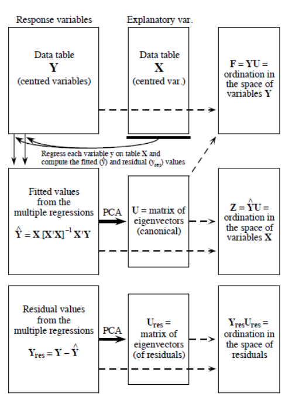

Chapter 6 Redundancy analysis
Redundancy Analysis is a direct extension of multiple regression, as it models the effect of an explanatory matrix X (n x p) on a response matrix Y (n x m). This is done by preforming an ordination of Y to obtain ordination axes that are linear combinations of the variables in X. In RDA, ordination axes are calculating from a PCA of a matrix Yfit, computed by fitting the Y variables to X by multivariate linear regression. Note that the explanatory variables in X can be quantitative, qualitative or binary variables. Prior to RDA, explanatory variables in Y must be centered, standardized (if explanatory variables are not dimensionally homogeneous, i.e. in different units), transformed (to limit the skew of explanatory variables) or normalized (to linearize relationships) following the same principles as in PCA. Collinearity between the X variables should also be reduced before RDA.
In order to obtain the best model of RDA, explanatory variables can be selected by forward, backward or stepwise selection that remove non-significant explanatory variables.
RDA involves two computational steps. In the first step, a matrix of fitted values Yfit is calculated trough the linear equation: Yfit = X\[X'X\]-1 \[X'Y\]
In the second step, a PCA of the fitted matrix Yfit is calculated (see equations in the figure below) and produce the canonical eigenvalues and eigenvectors together with the matrix Z containing the canonical axes. These canonical axes correspond to linear combinations of the explanatory variables in X. This linearity of the combinations of the X variables is a fundamental property of RDA. In the analysis of community composition, these canonical axes are interpreted as complex environmental gradients.

Redundancy analysis as a two-step process (from Legendre and Legendre 2012) Several statistics can be computed from RDA:
- The R² measures the strength of the canonical relationship between Y and X by calculating the proportion of the variation of Y explained by the variables in X, - The adjusted R² also measures the strength of the relationship between Y and X, but applies a correction of the R² to take into account the number of explanatory variables, - The F-statistic corresponds to an overall test of significance of an RDA by comparing the computed model to a null model. This test is based on the null hypothesis that the strength of the linear relationship calculated by the R² is not larger than the value that would be obtained for unrelated Y and X matrices of the same size. Note that F-statistics can also be used to sequentially test the significance of each canonical axis.
In R, RDA can be computed using the function rda from package vegan, as follows:
# Preparing the data prior to RDA
env.z <- subset(env.z, select = -das) # remove the 'distance from the source' variable
# Running the RDA
`?`(rda)
spe.rda <- rda(spe.hel ~ ., data = env.z)
### Extract the results
summary(spe.rda, display = NULL)
# The results are called using summary:
summary(spe.rda, display = NULL) #display = NULL optional The summary of the output looks like this:

These results contain the proportion of variance of Y explained by the X variables (constrained proportion, 73.41% here), the unexplained variance of Y (unconstrained proportion, 26.59% here) and then summarize the eigenvalues, the proportions explained and the cumulative proportion of each canonical axis (each canonical axis = each constraining variable, in this case, the environmental variables from env).
To select the significant explanatory variables, you can then perform a forward selection (or backwards or stepwise), using the ordiR2step() function (or using the forward.sel function of package packfor):
### Select the significant explanatory variables by forward
### selection
`?`(ordiR2step)
ordiR2step(rda(spe.hel ~ 1, data = env.z), scope = formula(spe.rda),
direction = "forward", R2scope = TRUE, pstep = 1000)
env.signif <- subset(env.z, select = c("alt", "oxy", "dbo"))The resulting output reads: rda(formula = spe.hel ~ alt + oxy + dbo, data = env.z) with the proportion of variation explained by the three constraining variables being 0.59. So in this case, only three variables are retained by the forward selection, i.e. alt, oxy and dbo. These three variables can be placed in a new data frame env.signif to perform the new RDA including only significant X variables:
The explanatory variables (altitude, oxygen and biological oxygen demand) now explain 59% of the variance in Y (species). The adjusted R² of this RDA is calculated using the function RsquareAdj:
(R2adj <- RsquareAdj(spe.rda.signif)$adj.r.squared)
# Here the strength of the relationship between X and Y
# corrected for the number of X variables is 0.54.The significance of the model and of each canonical axis can be tested using the function anova (note this is different from retaining significant variables as was done with forward selection, now we’re testing the significance of the RDA axes):
`?`(anova.cca)
anova.cca(spe.rda.signif, step = 1000)
anova.cca(spe.rda.signif, step = 1000, by = "axis")
# In this case, the RDA model is highly significant (p=0.001)
# as well as all three canonical axes.To visualize the results of the RDA, triplots can be drawn using the plot(). Note that as in PCA, users can create scaling 1 and scaling 2 triplots. In scaling 1, distance among objects approximate their Euclidean distances while in scaling 2, angles between variables X and Y reflect their correlation. Thus, scaling 1 triplots can be used to interpret distances among objects and scaling 2 triplots to interpret the relationships between X and Y. To plot the scaling 1 triplots of the RDA, the following code can be used:
# Quick plots scaling 1 and 2
windows()
plot(spe.rda.signif, scaling = 1, main = "Triplot RDA (scaling 1)")
windows()
plot(spe.rda.signif, scaling = 2, main = "Triplot RDA (scaling 2)")
# Advanced plots scaling 1
windows()
plot(spe.rda.signif, scaling = 1, main = "Triplot RDA - scaling 1",
type = "none", xlab = c("RDA1"), ylab = c("RDA2"), xlim = c(-1,
1), ylim = c(-1, 1))
points(scores(spe.rda.signif, display = "sites", choices = c(1,
2), scaling = 1), pch = 21, col = "black", bg = "steelblue",
cex = 1.2)
arrows(0, 0, scores(spe.rda.signif, display = "species", choices = c(1),
scaling = 1), scores(spe.rda.signif, display = "species",
choices = c(2), scaling = 1), col = "black", length = 0)
text(scores(spe.rda.signif, display = "species", choices = c(1),
scaling = 1), scores(spe.rda.signif, display = "species",
choices = c(2), scaling = 1), labels = rownames(scores(spe.rda.signif,
display = "species", scaling = 1)), col = "black", cex = 0.8)
arrows(0, 0, scores(spe.rda.signif, display = "bp", choices = c(1),
scaling = 1), scores(spe.rda.signif, display = "bp", choices = c(2),
scaling = 1), col = "red")
text(scores(spe.rda.signif, display = "bp", choices = c(1), scaling = 1) +
0.05, scores(spe.rda.signif, display = "bp", choices = c(2),
scaling = 1) + 0.05, labels = rownames(scores(spe.rda.signif,
display = "bp", choices = c(2), scaling = 1)), col = "red",
cex = 1)
# Advanced plots scaling 2
windows()
plot(spe.rda.signif, scaling = 2, main = "Triplot RDA - scaling 2",
type = "none", xlab = c("RDA1"), ylab = c("RDA2"), xlim = c(-1,
1), ylim = c(-1, 1))
points(scores(spe.rda.signif, display = "sites", choices = c(1,
2), scaling = 2), pch = 21, col = "black", bg = "steelblue",
cex = 1.2)
arrows(0, 0, scores(spe.rda.signif, display = "species", choices = c(1),
scaling = 2) * 2, scores(spe.rda.signif, display = "species",
choices = c(2), scaling = 2) * 2, col = "black", length = 0)
text(scores(spe.rda.signif, display = "species", choices = c(1),
scaling = 2) * 2.1, scores(spe.rda.signif, display = "species",
choices = c(2), scaling = 2) * 2.1, labels = rownames(scores(spe.rda.signif,
display = "species", scaling = 2)), col = "black", cex = 0.8)
arrows(0, 0, scores(spe.rda.signif, display = "bp", choices = c(1),
scaling = 2), scores(spe.rda.signif, display = "bp", choices = c(2),
scaling = 2), col = "red")
text(scores(spe.rda.signif, display = "bp", choices = c(1), scaling = 2) +
0.05, scores(spe.rda.signif, display = "bp", choices = c(2),
scaling = 2) + 0.05, labels = rownames(scores(spe.rda.signif,
display = "bp", choices = c(2), scaling = 2)), col = "red",
cex = 1)And the final triplots would look like this:


Challenge 1: Run an RDA of the mite environmental variables constraining the mite species abundances. Use:
# Load the mite species and environmental data from vegan
# package
data(mite)
mite.spe <- mite
mite.spe.hel <- decostand(mite.spe, method = "hellinger")
data(mite.env)What are the significant explanatory variables? How much of the variation in species data is explain by significant explanatory variables (i.e. those that were selected)? What are the significant axes? What group(s) of sites can you identify? What species are related to each group(s) of sites?
Challenge 1: Solution
Your code probably looks something like this:
# Initial RDA with ALL of the environmental data
mite.spe.rda <- rda(mite.spe.hel ~ ., data = mite.env)
# Select significant environmental variables
ordiR2step(rda(mite.spe.hel ~ 1, data = mite.env), scope = formula(mite.spe.rda),
direction = "forward", R2scope = TRUE, pstep = 1000)
# Create a new dataframe with only the significant variables
# that you identified above
mite.env.signif <- subset(mite.env, select = c("WatrCont", "Shrub",
"Substrate", "Topo", "SubsDens"))
# Re-run the RDA with the significant variables and look at
# the summary
mite.spe.rda.signif = rda(mite.spe ~ ., data = mite.env.signif)
summary(mite.spe.rda.signif, display = NULL)
# Find the R2 adjusted of the model with the retained
# environmental variables
(R2adj <- RsquareAdj(mite.spe.rda.signif)$adj.r.squared)
# Determine the significant canonical (constrained) axes)
anova.cca(mite.spe.rda.signif, step = 1000)
anova.cca(mite.spe.rda.signif, step = 1000, by = "axis")
# Plot the RDA
windows()
plot(mite.spe.rda.signif, scaling = 1, main = "Triplot RDA - scaling 1",
type = "none", xlab = c("RDA1"), ylab = c("RDA2"), xlim = c(-1,
1), ylim = c(-1, 1))
points(scores(mite.spe.rda.signif, display = "sites", choices = c(1,
2), scaling = 1), pch = 21, col = "black", bg = "steelblue",
cex = 1.2)
text(scores(mite.spe.rda.signif, display = "species", choices = c(1),
scaling = 1), scores(mite.spe.rda.signif, display = "species",
choices = c(2), scaling = 1), labels = rownames(scores(mite.spe.rda.signif,
display = "species", scaling = 1)), col = "grey", cex = 0.8)
arrows(0, 0, scores(mite.spe.rda.signif, display = "bp", choices = c(1),
scaling = 1), scores(mite.spe.rda.signif, display = "bp",
choices = c(2), scaling = 1), col = "red")
text(scores(mite.spe.rda.signif, display = "bp", choices = c(1),
scaling = 1) + 0.05, scores(mite.spe.rda.signif, display = "bp",
choices = c(2), scaling = 1) + 0.05, labels = rownames(scores(mite.spe.rda.signif,
display = "bp", choices = c(2), scaling = 1)), col = "red",
cex = 1)Five explanatory variables are significant: WatrCont, Shrub, Substrate, Topo, and SubsDens. The proportion of the variance explained by these variables is 32.08% and the adjusted R² of this model is 19.20%. While the first canonical is significant (p<0.001), the overall model is however not significant (p=0.107). Three groups of sites appear on the triplot. One group of sites with high water content (top right) have high abundance of species 9 and 25. Species 6, 12, 19 and 26 are related to another group of sites with hummock topography (bottom left). The last group of sites (top left) have not characteristic species and heterogeneous environmental conditions. See the triplot below: